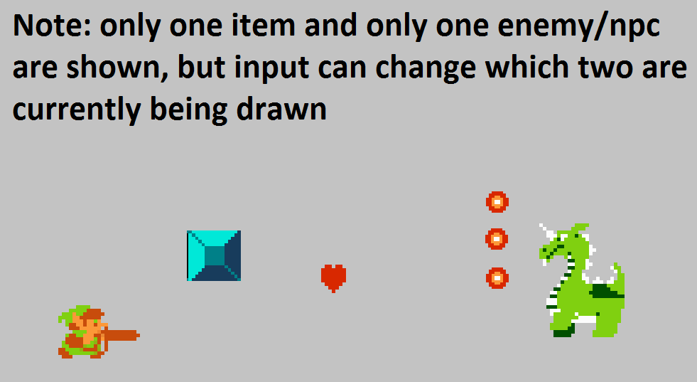

Sprint 2 - Game Objects and Sprites
Due dates:
- Initial task planning: Tues. 2/01 before midnight
- Functionality check-in (on Carmen): Mon. 2/14 before midnight
- Due (on Carmen): Mon. 2/21 before midnight
- Team evaluation on CATME: opens on Tues. 2/22, complete by Wed. 2/23 before midnight
Objectives:
- Continue to familiarize yourself with the software tools for project progress tracking and version control as described in Sprint 1.
- Create interfaces for different parts of the your game framework, options might include:
- Noun-like categories such as players, enemies, items, projectiles, blocks, etc.
- Verb-like categories such as drawables, updateables, collideables, etc.
- An entity-component design with entities, components, and system managers
- Create a class for each object that will be included in the first (and possibly only) dungeon of your game
- Implement drawing of each object
- Implement movement of each object so that the object moves similar to how it will in the actual game
- Implement sprite animation
- Implement state changes of each object. For example, many objects have four different facing directions and can take damage
- Keep the details of sprite drawing separate from the object's gameplay behavior
- Implement user input for changing the states of the player. For other objects that change state, cause changes based on timers, counters, and/or randomly generated numbers
Strongly Advised Design Suggestions:
- Make use of the Command design pattern to separate concerns of user input handling classes from the objects they act on.
- Make use of the Factory Method design pattern to separate the concern of creating/selecting sprites from the object that uses the sprite for its visual representation.
- Make use of the State design pattern to separate the concern of object state/behavior from complex objects such as the player character. Alternatively, encapsulate this logic in a state machine class.

Video example of a Sprint2 implementation with most of the intended functionality for object movement and animation for a team of size 5
Note - the Sprint requirements are structured to limit the scope of your project and gradually add new features in each Sprint (as is the practice in Agile Software Development).
However, you should have a rough idea for what will be needed to complete the first level of the game you are basing yours off of,
to help in designing a system that can easily be modified to add gameplay functionality as the project progresses.
You may find it useful to read through the manual for the game you plan to implement; an archive of NES game manuals can be found here.
Key Mappings
Use keyboard input for control over the player character and to cause state changes in other objects.
Allow upper and lower case letters for the key input.
Player controls
- Arrow and "wasd" keys should move Link and change his facing direction.
- The 'z' and 'n' key should cause Link to attack using his sword.
- Number keys (1, 2, 3, etc.) should be used to have Link use a different item (later this will be replaced with a menu system and 'x' and 'm' for the secondary item.
- Use 'e' to cause Link to become damaged.
Block/obstacle controls
- Use keys "t" and "y" to cycle between which block is currently being shown
(i.e. think of the obstacles as being in a list where the game's current obstacle is being drawn, "t" switches to the previous item and "y" switches to the next)
- all blocks should be stationary and should not interact with any other objects
Item controls
- Use keys "u" and "i" to cycle between which item is currently being shown
(i.e. think of the items as being in a list where the game's current item is being drawn, "u" switches to the previous item and "i" switches to the next)
- Items should move and animate as they do in the final game, but should not interact with any other objects
Enemy/NPC (other character) controls
- Use keys "o" and "p" to cycle between which enemy or npc is currently being shown
(i.e. think of these characters as being in a list where the game's current character is being drawn, "o" switches to the previous item and "p" switches to the next)
- characters should move, animate, fire projectiles, etc. as they do in the final game, but should not interact with any other objects
Other controls
- Use 'q' to quit and 'r' to reset the program back to its initial state.
Sprint 2 Work Expectations:
- Planning:
- Make sure all team members have been added to the project.
- Enter start and end dates for Sprint 2.
- Add several product backlog items (rows on the board) for the requirements for this sprint (controllers, commands, objects, sprites, etc.) and assign them to Sprint 2.
- Add tasks with effort amounts and assign each to someone.
Examples could include:
- Add a task for creating interfaces (or you can let the person responsible for each part of the implementation choose when to provide interfaces).
- Add a task for creating a Link class.
- Add a task for handling Link's state transitions.
- Add a task for creating enemy classes.
- Add a task for creating item classes.
- Add a task for creating block class(es).
- Add tasks for implementing commands and controllers.
- Add a task to implement keyboard input.
- Some advice: for Sprint 2 the player character logic is disproportionately larger than most of the other features, so it is recommended to split this work between at least two members.
- Software developmentand task tracking:
- Implement the features described in the sprint description.
- Each team member should implement the tasks assigned to them.
- When you start work on a task, drag the task to In-Progress on the board.
- If you did not finish the task that day, reduce the remaining work time estimate for the task.
- If you finished the task, drag it to Done and make sure its remaining work time is zero.
- You should place a high priority on the readability and simplicity of your code during the first half of the sprint.
- When refactoring, place a higher priority on the maintainability of the code.
- Try to finish early, given a three week period for a sprint, here are some recommended deadlines:
- First day of sprint - finish putting tasks up on the board
- End of second week - finish all of the functionality for the sprint ; complete one set of code reviews
- Middle of third week - finish all code refactoring for the sprint ; complete second set of code reviews
- End of the third week - complete remaining documentation and adminstrative tasks
- Other processes and tasks:
- README document
- Write up a document with useful information on your project. This might include:
program controls,
descriptions of known bugs that program has,
and details of any tools or processes your team used that aren't explicitly required (for example, calculating and using Code Metrics as part of your design process)
- Use tools to improve your code and/or create documentation about your codebase - do at least one of the following:
- Calculate your code metrics within Visual Studio under the Analyze menu.
Generate and record this values at least once a week, consider putting them in a spreadsheet and making graphs using the data.
- Use the .NET code analyzers (Roslyn) with rules for code quality analysis.
Document any errors or warnings that you get, then on-by-one fix them or set them as supressed with an explanation in your documentation on why you supressed that particular warning/error.
- Code Reviews
- Each member of the team should review at least one class and have at least one of their classes reviewed, with a focus on code readability
- Each member of the team should review at least one class and have at least one of their classes reviewed, with a focus on code maintainability
- More detailed guidelines on a code review process can be found below
- Sprint reflection
- Near the end of the sprint, write up a brief report on how your team performed this sprint, using the burndown chart from the board as the basis for discussion.
- Feel free to also discuss your processes as a whole.
Were any changes your made this sprint constructive or detrimental?
Do you have any plans for doing things differently next sprint?
On code reviews:
The best way to fulill the requirement of documenting reviewing of code within your team is by doing pull requests.
Alternatively, you can write up code reviews in plaintext documents to be submitted with the project.
In the root folder of the project, add a folder to store code reviews.
You can add plaintext files to the project in this folder by going to the Project menu, add new item, and select text file under the general option.
In the plaintext file for a readability review, include the following information:
- Author of the code review
- Date of the code review
- Sprint number
- Name of the .cs file being reviewed
- Author of the .cs file being reviewed
- Number of minutes taken to complete the review
- Specific comments on what is readable and what is not
In the plaintext file for a code quality review, include the following information:
- Author of the code review
- Date of the code review
- Sprint number
- Name of the .cs file being reviewed
- Author of the .cs file being reviewed
- Specific comments on code quality
- A hypothetical change to make to the game related to file being reviewed and how the current implementation could or could not easily support that change
Functionality check-in
One member of your team should follow the build->clean and project folder zipping process from Sprint0 and turn in your project on Carmen on the appropriate assignment page.
The purpose of this submission is similar to the "early bonus" from Sprint0 - incentive for students to not delay in getting their portion of the project done before the last few days of the sprint.
These submissions will be briefly tested (5-10 minutes), and if a submission appears to have at least 75% of the functional requirements for the sprint the team will be deemed to have passed the functional check-in.
Passing the functional check-in will be worth about 5%, or half a letter grade, on the grading of the sprint as a whole. Feedback on these submissions will be limited.
Project Submission
One member of your team should follow the build->clean and project folder zipping process from Sprint0 and turn in your project on Carmen on the appropriate assignment page.
If they aren't included in the zip file, also add your README and sprint reflection documents (and any other project management documents you made).
After the sprint is over, everyone should fill out a peer review form rating the work of everyone on your team, yourself included, for that sprint and turn in the file on Carmen on the assignment page for the peer review.
Additionally, at least one member of your team will need to arrange a meeting with your grader to review your work (at minimum the contents of your board, but you may review more).
Exceptions granted if you provide this documentation in another form, ex: screenshots of tasks board or direct log-in access to your taskboard
Lateness: your grader is permitted to evaluate submissions turned in 1-2 days late, but expect it to come with a 5%, or half a letter grade, penalty.
Peer reviews
The peer reviews are one of the main ways we get information about how your team is doing, so take your time to fill them out thoroughly and honestly.
In cases where peer reviews provide conflicting information,
either in inconsistent scores for a team member or inconsistency in scores and the overall functionality of the project,
your team might be asked to meet with the instructor to review your code commit logs to obtain more detailed information on each team member's contribution.
Grading
Each sprint you'll receive feedback on how your team is progressing. Your grader will review your work and provide comments on
- your documentation (task tracking, code reviews, code metrics/analysis)
- code functionality (has your team implemented enough work for its size and how buggy is it)
- (workload permitting also comments on code quality)
The team will get a rough letter grade for each sprint (within feedback, not as a score within the Carmen gradebook),
- A - exceptional work, goes beyond stated expectations
- B - good to average work
- C - needs improvement
- D - needs significant improvement
Your instructor will review your work (frequency TBD, likely to be every other sprint) and provide comments on
Code quality will also play a role in determining numeric project scores at the end of the semester.
Assume around 30-40% of the project scores are based on meeting high quality code standards.
You should refactor your code to eliminate any major code quality problems cited by your instructor and grader.
Minor issues may be excused but only after discussing the details with your instructor.